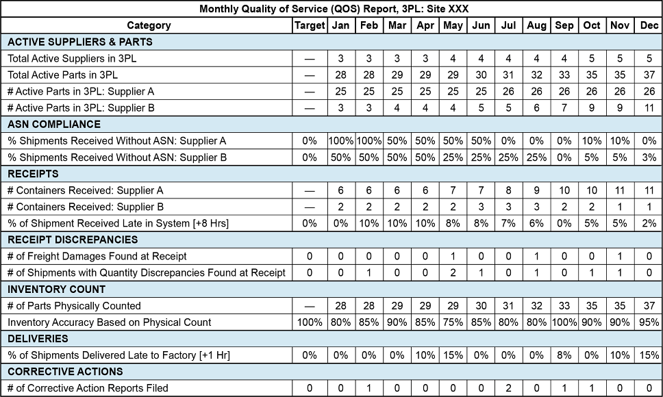
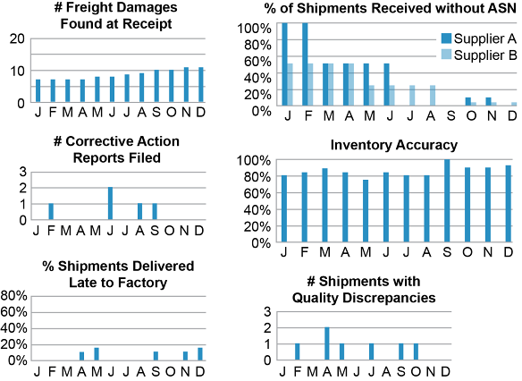
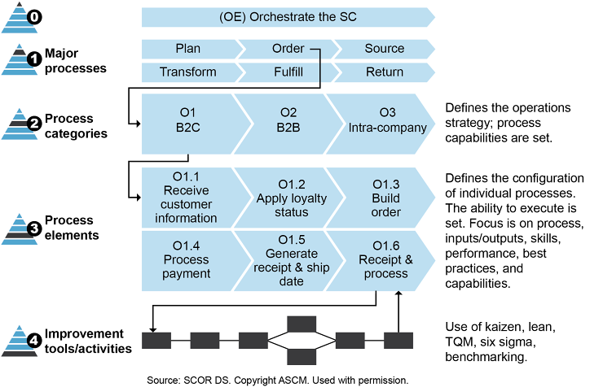
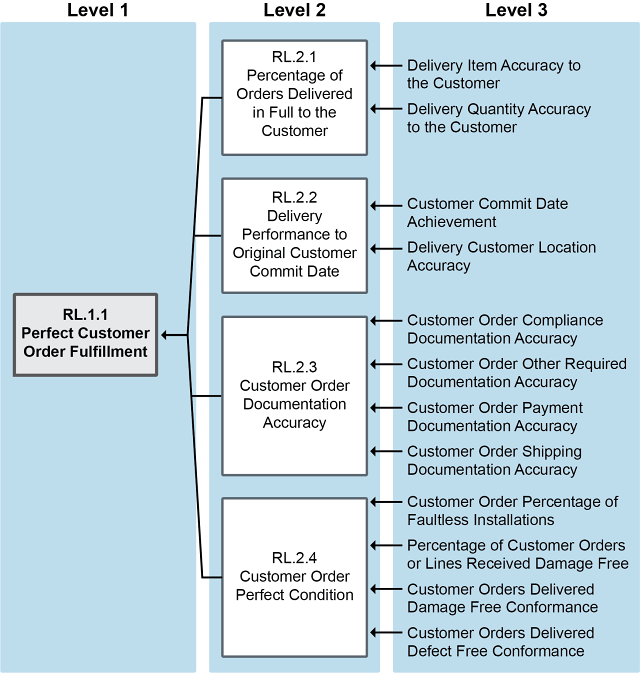

The 3 objectives of any measurement system:
- Monitoring: track actual system performance by observing and gathering data relevant to business objectives.
- Controlling: compare data to standards; determine when the system needs modification; identify root causes.
- Directing: understand human motivation and what incentives motivate people to work toward organizational goals.
Performance measures should be objective, consistent, and quantified. They should measure at least two parameters to detect trade-offs (e.g., cost vs. quality).
SC metrics must cut across functions and organizations to promote collaboration. Benefits of SC measurement:
- Control of processes and employees
- Management of suppliers and customers
- Reporting to managers and external sources
- Sharing demand/supply information across the chain
- Communication of expectations and problems
- Learning and continuous improvement
Common SC metrics tracked:
- % orders delivered on requested / promised delivery date
- Production schedule performance & stability
- Forecast accuracy, forecast bias (tracking signal), MAPE, MAD
- Order fulfillment lead time
- Total supply chain cost
- COGS, Cash-to-cash cycle time
- Inventory days of supply, Days’ sales outstanding, Days’ payables outstanding
Gathering performance data: determine data to collect — find sources — assess feasibility & accuracy — choose collection method — validate — archive in role-restricted repository.
Analyzing performance: formulate questions — turn data into information (compare to baselines, goals, benchmarks) — use ratio analysis/formulas — validate — prepare and present reports at predetermined intervals.
Improving performance: accept feedback — prepare short-term and long-term recommendations — audit processes periodically against strategic objectives — use change management/project management for improvements.
Metric Selection Framework (Griffis, Cooper, Goldsby, Closs):
- Competitive basis: responsive vs. efficient (greater responsiveness tends to lower efficiency).
- Measurement focus: strategic (e.g., total cost of ownership) vs. operational (efficient daily operations).
- Measurement frequency: diagnostic (decide between alternatives) vs. monitoring (assess daily performance).
BSC has 4 perspectives:
- Customer perspective: on-time delivery, order fulfillment, customer satisfaction.
- Business process perspective: internal processes that drive customer and financial outcomes.
- Innovation and learning perspective: staff training, process innovations, capability development.
- Financial perspective: cash-to-cash, ROA, revenue, costs.
BSC metrics require 4 items: goal, measure, target, actual. Custom scorecards can be developed in consultation with key suppliers — tailored to specific priorities.


Sustainability scorecards track energy, water, pollution, GHG, and social metrics (e.g., P&G Sustainability Scorecard, Walmart THESIS Index).
SCOR DS (Supply Chain Operations Reference — Digital Standard) is a cross-industry SC management framework with 4 major sections:
- Performance: performance attributes (reliability, responsiveness, agility, cost, assets) + level 1 and 2 metrics. Used to set strategy and benchmark with SCORmark.
- Processes: standard descriptions of management processes (Levels 0–4). Level 0 = Orchestrate; Level 1 = Plan, Source, Transform, Order, Fulfill, Return; Level 2 = process categories; Level 3 = process elements; Level 4 = company-specific implementation.
- Practices: unique ways to configure processes — analytics & technology (e.g., BP.049 Lean Planning), process (e.g., BP.009 Kanban), organization (e.g., BP.160 Lean).
- People: standard skill levels — Novice, Beginner, Competent, Proficient, Expert.
SCOR DS applies to: all customer interactions (order entry through paid invoice), all product transactions, all market interactions (aggregate demand through order fulfillment).
SCOR DS does NOT apply to: sales & marketing (demand generation), R&D, product development, some post-delivery customer support.


SCORmark: benchmarking tool (via PwC) that compares your SC performance against industry peers to identify gaps — used for gap analysis to set strategy.
Performance Attributes & Level 1 Metrics:
1. Reliability — Perfect Customer Order Fulfillment
- % of orders meeting delivery performance with complete and accurate documentation and no delivery defects.
- 7 Rs: right product, right quantity, right condition, right place, right time, right customer, right documentation.
- All of the following must be met: correct product, correct quantity, correct delivery location & time, faultlessly installed (if applicable), accurate & complete documentation, correct condition.
- Formula: Perfect Order Fulfillment % = (# perfect orders ÷ total orders) × 100
2. Responsiveness — Customer Order Fulfillment Cycle Time
- Average actual cycle time to fulfill customer orders, from order placement to delivery.
- A gross cycle time metric — may include dwell time (non-value-added wait time).
- Formula: Order Fulfillment Cycle Time = Source Cycle Time + Make/Transform Cycle Time + Deliver Cycle Time
- Net Cycle Time = Gross Cycle Time − Order Fulfillment Dwell Time
3. Agility
- Strategic SC Agility (days): number of days to meet a 25% unplanned increase in demand. Formula: sum of planned lead times for source + transform + order + fulfill + plan.
- Operational SC Agility (%): sustained % increase or decrease in quantities the SC can deliver within 30 days (assume no expedite costs).
4. Cost — Economic Metrics
- CO.1.1 Total SC Management Cost: total cost to manage order processing, returns, finance & planning, inventory, IT, and supply chain overhead across all SCOR DS processes.
- CO.1.2 COGS (Cost of Goods Sold): direct materials + direct labor + indirect costs related to production. Measures how effectively raw materials are converted to revenue.
- PR.1.1 EBIT as % of Revenue: Earnings Before Interest and Taxes ÷ Revenue. Measures earning power from ongoing operations.
- PR.1.2 Effective Tax Rate: average tax rate paid. A tax-efficient SC can improve this metric.
5. Assets — Economic Metrics
- AM.1.1 Cash-to-Cash Cycle Time (days):
C2C = Inventory Days of Supply + Days’ Sales Outstanding − Days’ Payables Outstanding
Example: 60 IDS + 40 DSO − 45 DPO = 55 days. Faster cycle = healthier cash position.
Days’ Sales Outstanding = avg days to collect payment after a sale (AR ÷ Daily Sales).
Days’ Payables Outstanding = avg days to pay suppliers (AP ÷ Daily Purchases).
Inventory Days of Supply = inventory on hand ÷ avg daily demand. - AM.1.2 Return on SC Fixed Assets (ROSCA):
ROSCA = (SC Revenue − TSCMC) ÷ SC Fixed Assets
Example: ($1,000,000 − $850,000) ÷ SC fixed assets. - AM.1.3 Return on Working Capital (ROWC):
ROWC = (SC Revenue − TSCMC) ÷ (Inventory + AR − AP)
Note: TSCMC here is not expressed as a percentage.
6. Sustainability Metrics
- Environmental: EV.1.1 Materials Used — EV.1.2 Energy Consumed (joules) — EV.1.3 Water Consumed (mega-liters) — EV.1.4 GHG Emissions (metric tons CO₂ equivalent, Scope 1+2+3) — EV.1.5 Waste Generated (metric tons).
- Social: SC.1.1 Diversity & Inclusion (% in governance bodies) — SC.1.2 Wage Level (ratio of entry wage to minimum wage by gender) — SC.1.3 Training (hours per gender per employee category).

6 capabilities in the DCM:
- Connected Customer: seamless customer experience throughout the life cycle (from awareness to loyalty).
- Product Development: optimized product life cycle management using proactive planning and emerging technology.
- Synchronized Planning: significantly more efficient planning using human and process capabilities + AI.
- Intelligent Supply: leveraging emerging technologies to reduce costs in sourcing and procurement.
- Smart Operations: increasing connectivity, agility, and automation in manufacturing/production.
- Dynamic Fulfillment: speed and agility in order fulfillment to increase customer service.
The DCM integrates with SCOR DS — SCOR DS’s Orchestrate process links all capabilities. DCM is presented as a holistic network (not linear), and organizations prioritize capabilities based on their strategy or performance gaps.
Click card to flip · Use arrows or shuffle to practise